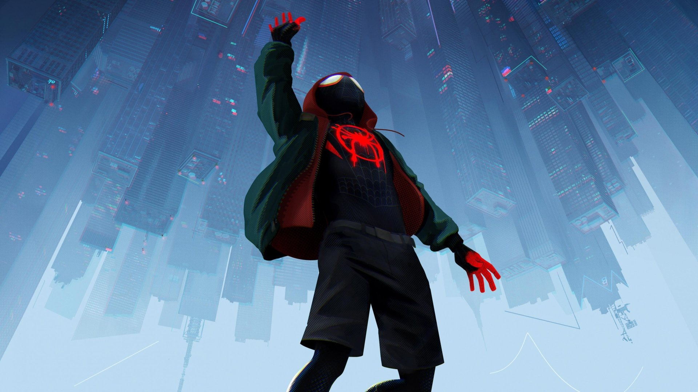
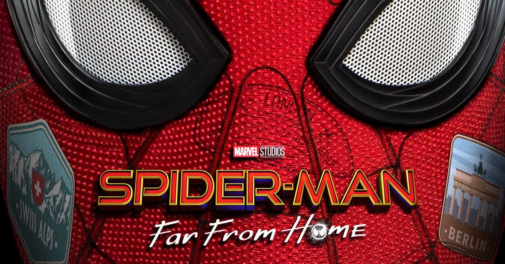

A bite from a spider somehow granted teenager Peter Parker its arachnid abilities and instead of using them for personal gain, he decided to help others with them. An orphan living with his aunt, May Parker, the boy chose to wear a mask while fighting crime so as not to burden her with his actions. Calling himself Spider-Man and sporting a pair of web-shooting devices he’d constructed, Parker wound up in internet videos which attracted the attention of Tony Stark. The billionaire industrialist deduced Spider-Man’s secret identity and approached Parker at his and May’s home in Queens, New York with a request for aid from the hero in an upcoming confrontation with Captain America and a group of other rogue Avengers and associates. Parker was initially hesitant to even admit his secret career as Spider-Man, but the thrill of adventure and Stark’s talk of responsibility drew him in and he accthe invitation. 
迈尔斯的父亲是一位一板一眼的警官，而他的母亲则是一名工作勤奋的护士。慈爱的父母对于孩子的成就非常自豪，也希望他能够融入新加入的这所优秀的学校，在这里取得成功。然而迈尔斯的生活因为一次意外变得更加复杂。他被一只放射性蜘蛛咬伤，并因此获得了毒液冲击、伪装隐藏、蜘蛛爬行、超凡听力、蜘蛛感应等一系列超能力。与此同时，这座城市里最臭名昭著的犯罪头目金并已经建立起一台高度隐秘的超级对撞机，这台对撞机开启了通往其他宇宙的时空通道，来自其他宇宙、不同版本的蜘蛛侠（包括中年彼得·帕克、女蜘蛛侠格温、暗影蜘蛛侠、蜘猪侠和潘妮·帕克）也来到了迈尔斯所在的世界。在这些新老角色的帮助下，迈尔斯慢慢学习、逐渐接受挑战，也学会了作为一名超级英雄所要承担的责任。他最终意识到，任何人都可以戴上超级英雄的面具，为正义而战。
在意大利威尼斯，彼得在一家小店买了一条颈链，准备之后送给MJ，却遭到了水人(水元素)的袭击，水城遭受破坏。彼得因没有穿战衣而没能击退对方，但贝克前来增援，彼得和贝克合力杀死水人。尼克突然在彼得的房间出现，把托尼的眼镜拿出来给他，希望他能继任，并希望他能帮忙对付元素众。这副眼镜配备的人工智能E.D.I.T.H.可以读取斯塔克工业的全部数据并依照命令发射武器，他差点为了对付情敌而炸毁了自己的巴士，之后尼克带了彼得去见贝克，他表示自己来自多重宇宙中的一个现实世界，元素众不久前杀害了自己的家人，而他与彼得、尼克和希尔已经消灭了水元素、土元素和风元素，但是火元素太强，所以需要彼得帮忙，但是彼得拒绝了他们的请求，去找班上的同学，但尼克猜测到火元素接下来会袭击布拉格，于是偷偷把行程改到了那里，更设计使彼得的同学到了远处看歌舞剧，MJ、贝蒂和內德却偷偷到了嘉年华，火元素在嘉年华中出现，贝克和身穿全新黑战衣的彼得联手将其摧毁。尼克、希尔、彼得和贝克到柏林商讨组建新的超级英雄团体。彼得认为贝克才是继任斯塔克的人选，把E.D.I.T.H.交给他。。